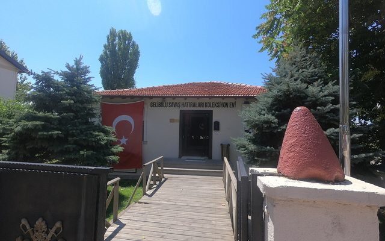

Kültür Varlıkları ガイドにはチャナッカレの19か所が載っています：10 博物館, 8 遺跡, 1 城・歴史的建造物。以下に注目スポット、地図、全リストを掲載しています。
⭐ 注目スポット

1 · チャナッカレ · 遺跡トロイ
トロイはホメロスの『イリアス』によって世界文学で最も有名な都市となりました。ヒサルルクの丘には、前期青銅器時代からローマ時代まで約4千年にわたって積み重なった9つの主要な層があります。1870年代のハインリッヒ・シュリーマンの発掘は、伝説が実在の場所に基づいていることを世界に示しましたが、性急な方法で一部の層を傷つけもしました。その後の…

2 · チャナッカレ · 遺跡アッソス遺跡
ベフラムカレ村の上にあるアッソスは、エドレミト湾とレスボス島を見下ろす火山性の丘の頂にあります。山頂のアテナ神殿はアナトリアでは珍しいアルカイック期のドーリア式神殿で、その円柱の間から夕日を眺めるのはエーゲ海で最も心に残る体験のひとつです。アリストテレスがここで一時期暮らし、活動したことが知られています。港へ下る城壁、アゴラ、ギムナシオ…

3 · チャナッカレ · 博物館トロイ博物館
古代トロイ近くのテヴフィキエ村の入口にあるトロイ博物館は、考古学の地層を思わせるよう設計された、地面からそびえる立方体の印象的な現代建築で知られています。スロープを登っていくと、トロイの地層を旅しているような気分になります。トロイとトロアス地方の出土品、青銅器時代の土器、金の装身具、彫刻、レリーフのあるポリュクセネの石棺などが展示され、…
🗺 地図
📍 すべてのスポット (19)
博物館 (10)
トロイ博物館博物館
ゲリボル戦争博物館博物館 カバテペ紹介センター博物館
カバテペ紹介センター博物館 キリトバヒル城博物館博物館
キリトバヒル城博物館博物館 ナマズギャーフ砲台博物館博物館
ナマズギャーフ砲台博物館博物館 チャナッカレ海事博物館博物館アダテペ・オリーブオイル博物館博物館ハミディエ砲台とチャナッカレ戦争歴史博物館博物館チャナッカレ叙事詩紹介センター博物館チャナッカレ・ヒラリ・アフメル再現エリア博物館
チャナッカレ海事博物館博物館アダテペ・オリーブオイル博物館博物館ハミディエ砲台とチャナッカレ戦争歴史博物館博物館チャナッカレ叙事詩紹介センター博物館チャナッカレ・ヒラリ・アフメル再現エリア博物館遺跡 (8)
トロイ遺跡 · UNESCOアッソス遺跡遺跡 アレクサンドリア・トロアス遺跡遺跡
アレクサンドリア・トロアス遺跡遺跡 アポロン・スミンテウス遺跡遺跡
アポロン・スミンテウス遺跡遺跡 ゲリボル歴史地区（チャナッカレの戦い）遺跡
ゲリボル歴史地区（チャナッカレの戦い）遺跡 ヘレス記念碑（セッデュルバヒル）遺跡
ヘレス記念碑（セッデュルバヒル）遺跡 パリオン古代都市遺跡ネアンドレイア古代都市遺跡
パリオン古代都市遺跡ネアンドレイア古代都市遺跡